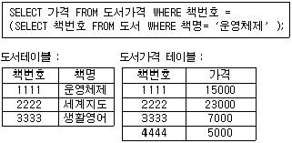
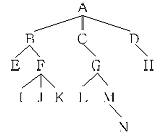
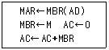
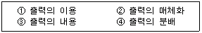
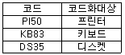
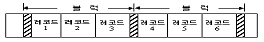
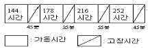
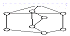
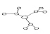
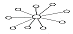

정보처리산업기사 (1999-08-08 기출문제)
1과목: 데이터 베이스
1. 희소병렬(spaning matrix)을 표현할 때 기억장소를 절약할 수 있는 가장 좋은 방법은?
- 링크드리스트
- 트리
- 스택
- 큐
(정답률: 50%)

2. 분산 데이터베이스의 장점이 아닌 것은?
- 데이터베이스 설계가 쉬움
- 분산제어 가능
- 시스템 성능 향상
- 시스템의 융통성 증가
(정답률: 90%)
3. 릴레이션을 조작할 때 데이터의 중복으로 인하여 발생하는 이상(anomaly)현상이 아닌 것은?
- 검색 이상
- 삽입 이상
- 삭제 이상
- 갱신 이상
(정답률: 59%)
4. 데이터베이스의 장점으로 관계가 먼 것은?
- 구축 비용이 저렴하다.
- 많은 양의 종이파일이 간소화 된다.
- 정확한 최신의 정보이용이 가능하다.
- 데이터 처리속도가 증가된다.
(정답률: 84%)
5. 데이터 제어어(DCL)의 역할이 아닌 것은?
- 불법적인 사용자로부터 데이터를 보호하기 위한 데이터 보안(Security)
- 데이터 정확성을 위한 무결성(Integrity)
- 시스템 장애에 대비한 데이터 회복과 병행 수행
- 데이터의 검색, 삽입, 삭제, 변경
(정답률: 68%)
6. 기관이 필요로 하는 정보를 생성하기 위한 모든 데이터 객체들에 대한 정의뿐만 아니라 데이터베이스 접근권한, 보안정책, 무결성 규칙에 대한 명세를 기술한 것은?
- 외부스키마
- 개념 스키마
- 내부스키마
- 서브스키마
(정답률: 80%)
7. 관계에 존재하는 튜플에서 선택조건을 만족하는 튜플의 부분집합을 구하기 위해서 사용하는 관계 대수 연산은?
- JOIN
- SELECT
- PROJECT
- UNION
(정답률: 62%)
8. 다음 질의문 실행의 결과는 무엇인가?

- 7000
- 5000
- 15000
- 23000
(정답률: 86%)
9. E-R 다이어그램의 구성요소와 표현방법이 잘못 짝지어진 것은?
- 개체 타입 - 사각형
- 관계 타입 - 삼각형
- 속성 - 타원
- 테이블 - 관계의 사상 원소수
(정답률: 82%)
10. 내부 정렬기법(Internal sorting)이 아닌 것은?
- 히프정렬(heap sort)
- 기수정렬(radix sort)
- 진동 병합정렬(oscillating merge sort)
- 선택 정렬(selection sort)
(정답률: 77%)
11. 리스트내의 데이터 삽입, 삭제가 한쪽 끝에서 이루어지는 데이터 구조는 무엇인가?
- 스택(stack)
- 큐(queue)
- 테크(deque)
- 원형 큐(circular queue)
(정답률: 75%)
12. 다음과 같은 트리(tree) 구조에서 기본 용어의 설명이 옳은 것은?

- node는 10 이다.
- node의 차수(degree of node)는 4이다.
- 레벨(level)은 5이다.
- 근(root) node는 N이다.
(정답률: 63%)
13. 개체 집합에 대한 속성관계를 표시하기 위해 개체를 노드로 표현하고 개체 집합들 사이의 관계를 링크로 연결한 트리(tree) 형태의 자료구조 모델은?
- 망 - 데이터 모델
- 계층 데이터 모델
- 관계 데이터 모델
- 객체 지향 데이터 모델
(정답률: 46%)
14. 관계데이터 모델의 무결성 제약중 기본키 값이 널(null)값일 수 없음을 의미하는 것은?
- 개체 무결성
- 창조 무결성
- 도메인 제약조건
- 주소 무결성
(정답률: 85%)
15. 뷰(view)에 관한 설명 중 잘못된 것은?
- 삽입. 삭제 갱신연산에 제한이 전혀 없이 사용이 편리하다.
- 뷰를 통해서만 데이터를 접근하게 하면 뷰에 나타나지 않는 데이터를 안전하게 보호하는 효율적인 기법으로 사용할 수 있다.
- 필요한 데이터만 뷰로 전의해서 처리할 수 있기 때문에 관리가 용이하고 명령문이 간단해진다.
- 데이터의 논리적 독립성을 어느 정도 제공한다.
(정답률: 79%)
16. 인덱스나 데이터파일을 블록으로 구성하고 각 블록에는 추가로 삽입될 레코드를 감안하여 빈 공간을 미리 예비해 두는 인덱스 방법은?
- 정적 인덱스 방법
- 동적 인덱스 방법
- 집중화 인덱스 방법
- 보조 인덱스 방법
(정답률: 71%)
17. 데이터베이스에 포함되는 모든 데이터 객체들에 대한 정의나 명세에 관한 정보를 유지관리하는 시스템을 무엇이라 하는가?
- 데이터 디렉토리
- 데이터 사전
- 저장 시스템
- 메타 시스템
(정답률: 52%)
18. 물리적 데이터베이스 설계시 그의 성능을 측정할 수 있는 척도로 가장 거리가 먼 것은?
- 응답시간
- 저장 공간의 효율화
- 트렌젝션 처리량
- 트랜잭션의 지속성
(정답률: 70%)
19. 데이터베이스 관리시스템의 필수기능 중 다양한 응용 프로그램과 데이터베이스가 서로 인터페이스를 할 수 있는 방법을 제공하는 기능은?
- 정의 기능
- 조작 기능
- 제어 기능
- 저장 기능
(정답률: 40%)
20. 논리적 데이터 모델 중 오너-멤버(owner-member)관계를 가지는 것은?
- E-R 모델
- 관계 데이터 모델
- 계층 데이터 모델
- 네트워크 데이터 모델
(정답률: 47%)
2과목: 전자 계산기 구조
21. BCD코드를 사용하는 이유는?
- 계산이 간편하다.
- 복잡한 연산기능을 수행할 수 있다.
- 10진수 입,출력이 간편하다.
- 메모리를 효과적으로 사용할 수 있다.
(정답률: 68%)
22. 연산장치의 기본요소가 되는 것은?
- 자기테이프
- 레지스터
- 카드
- 자기코어
(정답률: 60%)
23. 온라인 리얼 타임 시스템(on line real time system)에서 취급하는 방식이 아닌 것은?
- 리모트 잡(job) 입력시스템 방식
- 메시지 교환방식
- 조회방식
- 거래 데이터 처리방식
(정답률: 67%)
24. 시분할 처리방식에 적합한 단말장치는?
- 카드 천공장치
- 종이테이프 장치
- 영상 표시장치
- 광학식 문자 해독장치
(정답률: 36%)
25. 정보의 최소 단위는?
- Word
- Byte
- Bit
- Nibble
(정답률: 80%)
26. 8진수 265를 16진수로 나타내면?
- D5
- C3
- A5
- B5
(정답률: 85%)
27. -3의 1의 보수 표현과 값이 같은 것은?
- -1의 2의보수
- -4의 2의 보수
- -6의 2의 보수
- -7의 2의 보수
(정답률: 54%)
28. 서브루틴을 호출할 때 복귀번지(return address)를 기억하는데 주로 사용되는 것은?
- stack pointer
- flag
- program counter
- ALU
(정답률: 55%)
29. 오류 검출코드가 아닌 것은?
- Biquinary 코드
- Excess-3 코드
- 2 out -of 5 코드
- Hamming 코드
(정답률: 38%)
30. 캐시 기억장치(cache memory)의 특징 중 옳지 않은 것은?
- 고속이며, 가격이 저가이다.
- 주기억장치와 CPU사이에서 일종의 버퍼(buffer)기능을 수행한다.
- 기억장치의 접근(access) 시간을 줄이므로 컴퓨터의 처리속도를 향상시킨다.
- 수십 Kbyte∼수백 Kbyte의 용량을 사용한다.
(정답률: 58%)
31. 마이크로프로그램을 저장하는 제어 메모리는 주로 어떤 메모리를 사용하는가?
- ROM
- CAM(Content Addressable Memory)
- RAM
- 가상 메모리
(정답률: 52%)
32. 다음에서 주소 지정방식이 아닌 것은?
- direct addressing
- temporary addressing
- immediate addressing
- relative addressing
(정답률: 77%)
33. 대용량 메모리를 내장한 제품 중 프로그램 되어 있는 ROM은?
- PROM
- Mask ROM
- EPROM
- EAROM
(정답률: 65%)
34. 인터럽트 발생시 처리할 사항이 아닌 것은?
- return address의 기억
- 스택의 크기 계산
- CPU내의 레지스터 내용 기억
- 인터럽트 마스크 상태 제어
(정답률: 58%)
35. OP code 명령호출은 어느 레지스터로 이동하는가?
- Flag register
- Address register
- Index register
- instruction register
(정답률: 45%)
36. Interrupt를 발생하는 모든 장치들을 직렬로 연결하여 우선순위를 결정하는 방식은?
- step by step 방식
- serial encoder 방식
- interrupt register 방식
- daisy-chain 방식
(정답률: 67%)
37. 마이크로프로그램(micro program)에 대한 설명 중 옳지 않는 것은?
- 마이크로프로그램은 보통 RAM에 저장한다.
- 마이크로프로그램은 CPU 내의 제어장치를 설계하는 프로그램이다.
- 마이크로프로그램은 각종 제어 신호를 발생시킨다.
- 마이크로프로그램은 마이크로 명령으로 형성되어 있다.
(정답률: 49%)
38. program counter의 기능을 설명한 것 중 옳은 것은?
- PC의 내용은 fetch cycle 동안에 1 증가된다.
- PC의 내용은 execute cycle 동안에 1 증가된다.
- PC의 내용은 Fetching , executing 과 관계없다.
- PC의 내용은 변화하지 않는다.
(정답률: 65%)
39. 다음과 같은 마이크로 동작에 해당하는 인스트럭션은?

- AND
- STA
- BSA
- LDA
(정답률: 49%)
40. 0 누산기(ACC)에 대하여 바르게 설명한 것은?
- 레지스터의 일종으로 산술연산, 논리연산의 결과를 일시적으로 기억하는 장치
- 연산명령의 순서를 기억하는 장치
- 연산부호를 해독하는 장치
- 연산명령이 주어지면 연산준비를 하는 장소
(정답률: 68%)
3과목: 시스템분석설계
41. 코드 설계의 순서가 가장 바른 것은?
- 대상선택-코드표작성-코드설계-범위와 기간설정
- 대상선택-범위와 기간설정-코드설계-코드표작성
- 대상선택-범위와 기간설정-코드표작성-코드설계
- 대상선택-코드설계-범위와 기간설정-코드표작성
(정답률: 48%)
42. 응집도 적용시 고려할 사항으로 옳바르지 않는 것은?
- 모듈설계시 기능적 응집도를 갖게 하는 것이 바람직하다.
- 모듈의 독립성 관점에서는 논리적 응집도를 갖는 모듈이 좋다.
- 모듈을 기능적으로 분해하면 기능적으로는 강해지나 파일구조의 변화에 쉽게 영향을 받는다.
- 설계목표의 상충 발생시 우선순위의 부여는 상황과 조건을 고려하여 설계자가 내려야 한다.
(정답률: 32%)
43. 출력정보의 설계 순서가 올바른 것은?

- ①-②-③-④
- ①-③-②-④
- ③-②-④-①
- ②-④-①-③
(정답률: 62%)
44. 시스템의 기본 구성요소에 해당하지 않는 것은?
- 처리(PROCESS)
- 제어(CONTROL)
- 피드백(FEED BACK)
- 통신(COMMUNICATION)
(정답률: 67%)
45. 수표나 어음과 같이 특수 장치로 출력되어 이용자의 손을 경유하여 재입력되는 시스템을 무엇이라고 하는가?
- 집중 매체화형 시스템
- 분산 매체화형 시스템
- 턴 어라운드 시스템
- 직접 입력 시스템
(정답률: 72%)
46. 시스템 분석가로서 훌륭한 분석을 하기 위한 기본 사항이 아닌 것은?
- 분석가는 창조성이 있어야 한다.
- 분석가는 시간배정과 계획 등을 빠른 시간 내에 파악할 수 있어야 한다.
- 분석가는 컴퓨터장치와 소프트웨어에 대한 지식을 가져야 한다.
- 분석가는 기계 중심적이어야 한다.
(정답률: 78%)
47. IPT기법의 적용 목적으로 거리가 먼 것은?
- 개발자의 생산성 향상
- 프로그래밍의 표준화 유도
- 개인적인 차이 해소
- 프로그래머의 충원용이
(정답률: 65%)
48. 시스템의 신뢰성 평가요소로 거리가 먼 것은?
- 시스템 전체의 가동률
- 보조기억장치의 용량과 성능
- 신뢰성 향상을 위해 시행한 처리의 경제 효과
- 시스템을 구성하는 각 요소의 신뢰도의 균형성
(정답률: 50%)
49. 다음 표와 같이 부여하는 것을 무슨 코드라 하는가?

- Mnemonic code
- Block code
- Character code
- Significance code
(정답률: 48%)
50. 시스템에 대한 정의로 잘못된 것은?
- 예정된 기능을 수행하기 위하여 설계된 상호작용을 갖는 요소의 유기적 집합체이다.
- 어떤 목적을 위하여 하나이상의 기능요소가 상호 관련하여 유기적으로 결합된 것이다.
- 공통의 목적에 의하여 공통의 목적에 기여할 수 있는 많은 이질부분으로 구성되는 복잡한 단일체이다.
- 상호 관련이 없는 구성요소가 조합되어 어떤 목적을 위하여 유기적으로 결합된 것이다.
(정답률: 67%)
51. 시스템의 출력 설계에서 종이에 출력하는 대신 출력정보의 형태나 문자를 마이크로필름에 수록하는 방식은?
- CRT출력 시스템
- X-Y 플로터
- 음성출력 시스템
- COM 시스템
(정답률: 68%)
52. 문서화의 목적에 대한 설명으로 옳지 않은 것은?
- 시스템 개발 프로젝트 관리의 효율화
- 소프트웨어 이완의 용이함
- 시스템 유지보수의 효율화
- 시스템 개발과정의 요식행위화
(정답률: 60%)
53. 구조적 언어로 자료흐름의 최소 단위를 명세화 한 것은?
- 구조적 영역
- 자료 저장소
- 소단위 명세서
- 자료사전
(정답률: 46%)
54. 객체의 특성과 거리가 먼 것은?
- 객체마다 각각의 상태를 갖고 있다.
- 식별성을 가진다.
- 행위에 대하여 그 특징을 나타낼 수 있다.
- 일정한 기억장소를 가지고 있지 않다.
(정답률: 70%)
55. 모듈 결합도에는 여러 종류가 있다. 결합도가 가장 높은 것은?
- 내용(content) 결합
- 제어(argu) 결합
- 공통(common) 결합
- 자료(data) 결합
(정답률: 61%)
56. 다음 그림과 같이 길이가 같은 논리레코드들이 같은 수로 모여 블록을 형성한 형식으로 모든 물리레코드의 길이도 동일하며, 경제성이 높고 속도가 빠르며 프로그램 작성이 용이한 레코드(Record)의 형식은?

- 블록화 가변길이 레코드(blocking variable length record)
- 비블록화 가변길이 레코드(unblocking variable length record)
- 블록화 고정길이 레코드(blocking fixed length record)
- 비블록화 고정길이 레코드(unblocking fixed length record)
(정답률: 83%)
57. 프로세스 입력단계에서의 체크 중 입력정보의 특정항목의 합계 값을 미리 계산하여 이것을 입력정보와 합계 입력하고 컴퓨터상에서 계산한 결과와 수동 계산결과가 같은지를 체크하는 것은?
- 시퀀스 체크 (sequence check)
- 리미트 체크 (limit check)
- 발란스 체크 (balance check)
- 배치 토탈체크 (batch total check)
(정답률: 46%)
58. 모듈의 특징이 아닌 것은?
- 모듈은 서로 결합되어 통속적으로 실행되지만 컴파일만큼은 독립적이다.
- 모듈은 업무성격이 비슷한 처리에 부품처럼 공통으로 사용할 수 있다.
- 모듈의 작성은 분담하여 독립적으로 작성할 수 있다.
- 모듈마다 사용할 변수를 새로 정의한다.
(정답률: 46%)
59. 람바우(Rumbaugh)의 객체지향분석 모델링에서 데이터흐름 다이어그램을 이용하여 다수의 프로세스들 간의 데이터 흐름을 중심으로 처리과정을 표현한 모델링은?
- 동적 모델링
- 기능 모델링
- 클래스 모델링
- 객체 모델링
(정답률: 37%)
60. 시스템의 기동상태가 그림과 같을 때 이 시스템의 MTBF(Mean Time Between failure)는 어떤 것인가?

- 283.3시간
- 197.5시간
- 45분
- 0.0038분
(정답률: 53%)
4과목: 운영체제
61. UNIX에서 커널의 기능이 아닌 것은?
- 프로세스간 통신(IPC)
- 기억장치 관리(memory management)
- 프로세스 관리(process management)
- 데이터베이스 관리(database management)
(정답률: 46%)
62. UNIX에서 inode에 들어있는 내용이 아닌 것은?
- 파일을 최후로 접근(access)한 시간
- 파일이 최초로 변경(modification)된 시간
- 파일의 크기
- 파일의 타입
(정답률: 56%)
63. Round-Robin 스케쥴링에 대한 설명으로 틀린 것은?
- 프로세스들이 배당 시간 내에 작업을 완료되지 못하면 폐기된다.
- 프로세스들이 중앙처리장치에서 시간 량에 제한을 받는다.
- 시분할 시스템에 효과적이다.
- 선점형(preemptive)기법이다.
(정답률: 59%)
64. 교착상태의 필요조건이 아닌 것은?
- 상호배제
- 환형대기
- 점유와 대기
- 자원의 선점
(정답률: 70%)
65. 인터럽터 시계의 시간할당량이 종료될 때 발생되는 인터럽트 종류는?
- SVC interrupt
- Program Check interrupt
- I/O interrupt
- External interrupt
(정답률: 30%)
66. 다중 처리기 운영체제의 주/중(master/slave)구조에서 각각의 기능에 대한 연결이 올바른 것은?
- master : 입/출력 담당, slave : 연산담당
- master : 연산담당 , slave : 입/출력담당
- master : 연산담당 , slave : 연산 및 입/출력 담당
- master : 연산 및 입/출력 담당, slave : 연산담당
(정답률: 43%)
67. 강결함 (tightly-coupled)시스템과 약결합 (loosely-coupled) 시스템에 대한 설명으로 옳지 않은 것은?
- 약결합 시스템은 각각의 시스템이 별도의 운영체제를 가진다.
- 약결합 시스템은 하나의 저장장치를 공유한다.
- 강결합 시스템은 하나의 운영체제가 모든 처리기와 시스템 하드웨어를 제어한다.
- 약결합 시스템은 메시지를 사용하여 상호 통신을 한다.
(정답률: 55%)
68. 운영체제가 프로세스에 대한 중요한 정보를 저장해 놓을 수 있는 저장장소를 PCB (Process Control Block)라고 한다. PCB가 갖는 정보가 아닌 것은?
- 프로세스의 현 상태
- 프로세스의 우선순위
- 프로세스의 고유한 식별자
- 프로세스의 크기
(정답률: 30%)
69. 프로세스의 상태가 아닌 것은?
- 정지 상태(Halt)
- 준비 상태(Ready)
- 대기 상태(Blocked)
- 실행 상태(Running)
(정답률: 65%)
70. Brinch Hangen의 HRN기법의 가변적 우선순위를 구하는 식으로 올바른 것은?
- (대기 시간 + 서비스를 받을 시간) / 서비스를 받을 시간
- (서비스를 받을 시간 + 대기시간) / 대기시간
- (실행시간 + 대기시간) / 대기시간
- (실행시간 + 서비스를 받을 시간) / 대기시간
(정답률: 74%)
71. 어떤 프로세스가 프로그램 수행에 소요되는 시간보다 페이지 교체에 소요되는 시간이 더 많은 경우를 의미하는 것은?
- page fault
- thrashing
- overloading
- demand paging
(정답률: 67%)
72. 프로그램이 프로세서에 의해 수행되는 속도와 프린터 등에서 결과를 처리하는 속도의 차이를 극복하기 위해 디스크 저장 공간을 사용하는 기법은?
- 인터프린터(Interpreter)
- 사이클 스틸링(cycle stealing)
- 스플링(spooling)
- 폴링(polling)
(정답률: 66%)
73. 기존의 CICS방식의 컴퓨터에 비해 RISC방식의 컴퓨터에서 괄목적인 변화를 보여준 것은?
- 메모리 관리측면
- 명령어 처리측면
- 자원 관리측면
- 디바이스 관리측면
(정답률: 50%)
74. 기억장치 배치전략이 아닌 것은?
- best-fit
- first-fit
- worst-fit
- small-fit
(정답률: 73%)
75. 프로세스가 기억장치내의 정보를 균일하게 액세스하는 것이 아니라 어느 한 순간에 특정부분을 집중적으로 액세스하는 것을 가르키는 말은?
- 구역성(locality)
- 스래싱(thrashing)
- 워킹세트(working set)
- 프리페이징(prepaging)
(정답률: 71%)
76. 불연속 할당(non-contiguous allocation)기법 중 블록 할당 기법이 아닌 것은?
- 블록 체인기법
- 색인블록 체인기법
- 세그먼트 블록 체인기법
- 블록 지향파일 사상기법
(정답률: 27%)
77. CPU 스케쥴링 기법에서 작업이 끝나기까지의 실행시간 추정치가 가장 작은 작업을 먼저 실행시키는 기법은?
- FIFO
- SRT
- SJF
- HRN
(정답률: 72%)
78. 파일의 구조는 파일을 구성하는 레코드들이 보조기억 장치에 배치되는 방식을 말한다. 이에 관한 설명중 틀린 것은?
- 순차파일의 레코드들은 반드시 연속된 물리적 저장 공간에 저장될 필요는 없다.
- 인덱스된 순차파일에서 레코드는 각 레코드의 키값에 따라 논리적 순서대로 배열되어 있다.
- 직접 파일은 레코드가 직접 액세스 기억장치의 물리적 주소를 통해 직접 액세스 된다.
- 분할된 파일은 여러개의 순차 서브파일로 구성된 파일이다.
(정답률: 66%)
79. 기억장치 관리전략 중 새로 반입된 프로그램을 주기억 장치의 어디에 위치시킬 것인가를 결정하는 전략은?
- 요구반입(demand fetch) 전략
- 예상반입(anticipatory fetch) 전략
- 배치(placement) 전략
- 교체(replacement) 전략
(정답률: 62%)
80. 기한부(deadline) 스케쥴링에 관한 설명으로 거리가 먼 것은?
- 작업이 주어진 특별한 시간이나 만료시간안에 완료되도록 하는 기법이다.
- 동시에 다수의 기한부 작업이 수행되면 스케쥴링은 보다 용이해 진다.
- 기한부 스케쥴링에 필요한 집약적 자원관리는 많은 오버헤드를 일으킬 수 있다.
- 사용자는 그 작업에 필요한 자원에 관한 정확한 정보를 시스템에 제시하여야 한다.
(정답률: 53%)
5과목: 정보통신개론
81. 비동기 전송방식에서 스타트(START)와 스톱(STOP)신호의 가장 적합한 필요성은?
- Bit와 Bit사이를 구분하기 위하여
- 정보 단위의 하나이므로
- Byte와 Byte를 구분하기 위하여
- Bit정보를 샘플링(Sampling)하기 위하여
(정답률: 57%)
82. 다음 중 광섬유케이블의 장점이 아닌 것은?
- 안정된 통신 및 누화방지
- 많은 중계 급전선 필요
- 광대역이며 대용량 전송
- 설치, 보수용이 및 비용 절감
(정답률: 74%)
83. 구내나 동일 건물 내에서 프로그램, 파일 또는 주변장치들을 공유할 수 있는 컴퓨터 통신망은?
- ISDN
- LAN
- VAN
- SONET
(정답률: 73%)
84. OSI 7계층 참조모델을 크게 상위레벨과 하위레벨로 구분할 수 있다. 다음 중 하위레벨에 해당하지 않는 계층은?
- 물리계층
- 네트워크계층
- 트랜스포트계층
- 데이터링크계층
(정답률: 57%)
85. 통신 프로토콜에 대한 정의로 옳은 것은?
- 통신용 응용프로그램의 집합이다.
- 두 개체간의 데이터 교환을 하기 위한 통신규약이다.
- 통신망 구조를 결정하는 물리적인 결합방법이다.
- 통신용 전송매체의 특성을 규정하는 표준방법이다.
(정답률: 57%)
86. 통신제어장치(CCU)의 설명 중 옳은 것은?
- 통신제어장치는 전송로와 신호변환기사이에 있다.
- 처리된 데이터를 전송회선으로 보내기에 알맞는 모양으로 조립한다.
- 데이터 신호를 판독 및 고속화한다.
- 통신회선의 전송속도와 중앙처리장치의 처리속도 사이에서 조정을 수행한다.
(정답률: 58%)
87. 다음 중 패킷 교환망의 주요 기능과 거리가 먼 것은?
- 오류제어
- 인터페이스
- 트래픽제어
- 논리채널
(정답률: 43%)
88. 비디오텍스에서는 문자정보와 도형정보가 여러 색으로 표시된다. 도형정보의 표현형식이라고 볼수 없는 것은?
- Mosaic 방식
- Geometric 방식
- Photographic 방식
- Panorama 방식
(정답률: 30%)
89. 영상부호화 표준화 방식중 가정용 VTR 품질(1.5Mbps)의 영상을 제공하기 위한 표준은?
- H251
- MPEG-I
- MEPG-II
- Advanced TV
(정답률: 60%)
90. 정보처리가 가능한 기계와 기계간에 전기적인 통신회선을 통해 정보를 송수신하는 통신으로 가장 적합하게 표현한 것은?
- 유선통신
- 정보통신
- 전령통신
- 무선통신
(정답률: 63%)
91. 시스템 소프트웨어에 해당되지 않는 사항은?
- 사용자 프로그램
- 제어 프로그램
- 서비스 프로그램
- 언어번역 프로그램
(정답률: 35%)
92. 데이터베이스에 대한 설명으로 옳지 않은 것은?
- 데이터를 구성하는 하나의 항목을 필드라 한다.
- 데이터 표현의 최소 단위를 바이트라 한다.
- 여러개의 필드가 모여 하나의 레코드를 이룬다.
- 여러개의 레코드가 모여 하나의 파일을 구성한다.
(정답률: 80%)
93. 다음 중 데이터 통신방식이 아닌 것은?
- 전이중통신방식
- 단방향통신방식
- 반이중통신방식
- 업링크통신방식
(정답률: 84%)
94. 주프로세서(Host processor)를 통하여 데이터를 교환하며 통신망제어를 가장 간편하게 할 수 있는 통신망 유형은?
- 분산형
- 루우프(loop)형
- 계층형
- 중앙 집중형
(정답률: 60%)
95. Mesh형 컴퓨터 통신망에 해당하는 것은?



(정답률: 61%)
96. 지능망의 구조는 지능망 서비스의 제공을 쉽게 하기 위하여 3개의 계층을 갖는다. 다음 중 아닌 것은?
- 전달망계층
- 단국망계층
- 신호망계층
- 서비스망계층
(정답률: 58%)
97. 다음 중 정보통신의 의미를 가장 잘 표현한 것은?
- 컴퓨터와 통신회선의 결합으로 전송기능에 통신처리 기능이 추가된 데이터 통신
- 컴퓨터와 통신기술의 결합에 의하여 통신처리기능은 물론이고, 정보처리기능에 정보의 변환, 저장과정이 추가된 형태의 통신
- 정보통신망을 이용하여 체계적인 정보의 전송을 위한 통신
- 멀티미디어에 의한 복합적인 통신
(정답률: 66%)
98. 컴퓨터의 발전과정에서 본격적인 실용화시대는 몇 세대에 해당되는가?
- 제1세대
- 제2세대
- 제3세대
- 제4세대
(정답률: 33%)
99. ISDN 채널의 종류와 전송속도의 관계가 잘못된 것은?
- B채널 : 1G[kbps]
- D채널 : 64/16[kbps]
- H0채널 : 384[bps]
- A채널 : 4[KHz] analog
(정답률: 60%)
100. 브리지(Bridge)에 대한 설명 중 틀린 것은?
- LAN과 LAN을 연결한다.
- 프로토콜이 다른 LAN을 확장시 사용한다.
- Data의 움직임을 제어함으로써 내부와 외부 간 LAN의 정보량과 트래픽 양을 조절하는 기능이 있다.
- 데이터링크 계층에서 작동한다.
(정답률: 50%)